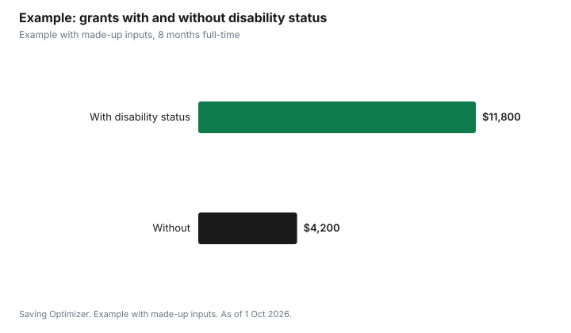

Education · Canada
Canada Student Grant for Students with Disabilities: $2,800 Plus Up to $20,000
For 2026-27, the Canada Student Grant for Students with Disabilities is $2,800 per program year for full- or part-time students with a permanent, or persistent or prolonged, disability who qualify for federal student aid. A separate federal grant pays up to $20,000 a year for disability-related services and equipment, such as tutors, note-takers, interpreters and technical aids. Establishing your disability status also lets you study at a reduced course load of 40% and still get full-time funding. Apply for disability status early: StudentAid BC says confirmation usually takes about six weeks.
Key takeaways
- Canada Student Grant for Students with Disabilities: $2,800 for 2026-27.
- Services and equipment grant: up to $20,000 per loan year.
- Disability status lets you take 40% to 59% of a full load and keep full-time funding.
- The Gazette says the grant goes to all students with disabilities who have assessed need.
- RAP-D caps repayment at 10 years, and the government pays what your reduced payment does not.
- Example with made-up inputs: one student receives $11,800 in grants instead of $4,200.
How much you can get
The Canada Gazette amendment SOR/2026-139, in force 1 August 2026, sets the Canada Student Grant for Students with Disabilities at $2,800 for the 2026-27 academic year. StudentAid BC notes that this amount is temporarily increased by 40% from 2019-20 pre-pandemic levels until 31 July 2027, so check the amount again for 2027-28. The Gazette says the grant is provided to all students with disabilities who have assessed financial need, and that 11% of students in the program identified as having a disability in 2023-24.
| Grant | Amount | Who |
|---|---|---|
| Canada Student Grant for Students with Disabilities | $2,800 per program year (1 Aug to 31 Jul) | Full- or part-time; permanent, or persistent or prolonged, disability; qualify for a federal loan |
| Canada Student Grant for Services and Equipment | Up to $20,000 per loan year | Full- or part-time; exceptional education-related costs for services or equipment due to the disability |
These grants are on top of the regular need-based grants. A full-time student with a disability can also receive the Canada Student Grant for Full-Time Students, up to $525 a month for 2026-27, and a parent can receive the dependants grant.
What counts as a disability
StudentAid BC quotes the Canada Student Financial Assistance Program definitions. A permanent disability is an impairment or functional limitation, including physical, mental, intellectual, cognitive, learning, communication or sensory, that restricts the daily activities needed to pursue post-secondary studies or work and is expected to remain for the person's expected life. A persistent or prolonged disability is the same, except that it has lasted or is expected to last at least 12 months but is not expected to remain for life.
| Status | Duration | Re-assessment |
|---|---|---|
| Permanent | Expected to remain for the person's expected life | No need to re-establish once confirmed by StudentAid BC |
| Persistent or prolonged | Lasted or expected to last at least 12 months, not for life | Re-establish when you enter repayment or after a break in study of more than 5 years from the original assessment |
How to establish disability status
StudentAid BC says you need a medical assessment by a qualified medical assessor that explains the functional limitations or impairments restricting your ability to take part in post-secondary studies. You can apply for disability status at any time, without waiting for your loan application, and applying early means funding arrives sooner. It usually takes about six weeks. Other provinces have similar processes; check with your provincial student aid office.
Services and equipment funding
Once your disability status is established, you can apply for the Canada Student Grant for Services and Equipment, worth up to $20,000 per loan year. StudentAid BC lists a visit to your school's accessibility services office as an early step in requesting equipment. In B.C., the B.C. Assistance Program for Students with Disabilities can help further only after you have used up the federal services and equipment grant, with up to $12,000 listed where an attendant is required at school.
Reduced course load
Disability status lets you study part of a full load and still be treated as full-time for funding. StudentAid BC says you can study at a reduced load of 40% to 59% and still receive full-time funding, and Alberta Student Aid sets the full-time minimum at 40% instead of 60% for students with a documented disability. Quebec's AFE uses 45 university credits instead of 90 for one of its self-supporting tests for students with a major functional disability.
| Program | Usual full-time minimum | With a disability |
|---|---|---|
| StudentAid BC | 60% | 40% |
| Alberta Student Aid | 60% | 40% |
| Quebec AFE (self-supporting test) | 90 university credits | 45 credits with a major functional disability |
B.C. top-ups
StudentAid BC lists the B.C. Access Grant for Students with Disabilities, which replaces up to $1,560 ($30 per week of study) per program year of B.C. student loan with grant for full-time students at B.C. public schools. It also lists the B.C. Supplemental Bursary for Students with Disabilities, the Learning Disability Assessment Bursary and the B.C. Access Grant for Deaf Students. See StudentAid BC 2026-27.
Example with made-up inputs: one school year
These numbers are an example with made-up inputs. A full-time student in B.C. with family income below the full-time threshold studies for 8 months and has $15,000 of assessed need. Without disability status, the federal full-time grant is 8 × $525 = $4,200. With disability status, the student adds the $2,800 disability grant and $4,800 from the services and equipment grant for a note-taker and software, for $11,800 in grants. The B.C. Access Grant for Students with Disabilities could replace up to $1,560 more of B.C. loan.
| Grant | Without status | With status |
|---|---|---|
| Full-time grant (8 × $525) | $4,200 | $4,200 |
| Disability grant | $0 | $2,800 |
| Services and equipment | $0 | $4,800 |
| Total grants | $4,200 | $11,800 |

Repayment help: RAP-D
Canada.ca says that under the Repayment Assistance Plan for Borrowers with Disabilities, the government pays down both the principal and any interest that your reduced monthly payments do not cover. The maximum time in repayment after leaving school is 10 years for persons with a disability, compared with 15 years in most cases. The rule that blocks new grants and loans after the government pays principal under regular RAP does not apply to RAP-D. See how much you pay on RAP.
Steps
- Get a medical assessment that describes your functional limitations for studies.
- Apply for disability status with your provincial student aid office as early as possible.
- Apply for student aid; the $2,800 grant is assessed with your application.
- Meet your school's accessibility services office about services and equipment.
- Apply for the services and equipment grant with quotes or receipts as required.
- If you have a persistent or prolonged disability, plan to re-establish status at repayment.
Sources
- Canada Gazette Part II, SOR/2026-139, published 1 Jul 2026. $2,800 for 2026-27; grant provided to all students with disabilities with assessed need; 11% of students in 2023-24.
- StudentAid BC, Canada Student Grant for Students with Disabilities; Canada Student Grant for Services and Equipment; How to apply for disability funding; B.C. Access Grant for Students with Disabilities; B.C. Assistance Program for Students with Disabilities, studentaidbc.ca, as of 1 Oct 2026.
- Alberta Student Aid, eligibility for loans and grants, studentaid.alberta.ca, as of 1 Oct 2026. 40% course load with a documented disability.
- Gouvernement du Québec, Contribution of parents, sponsor or spouse, quebec.ca, as of 1 Oct 2026. 45-credit rule.
- Government of Canada, Repay a student loan: repayment assistance, canada.ca (Wayback capture 13 Sep 2026), as of 1 Oct 2026. RAP-D.
- Need and grant amounts in the example are an example with made-up inputs.
Frequently asked questions
How much is the Canada Student Grant for Students with Disabilities?
$2,800 for the 2026-27 program year, set by SOR/2026-139. StudentAid BC says this is a temporary 40% increase over 2019-20 levels until 31 July 2027.
What does the services and equipment grant cover?
Up to $20,000 per loan year for exceptional education-related costs due to a disability, such as tutors, note-takers, interpreters and technical aids.
Can I study part-time and get full-time funding with a disability?
Yes, within limits. StudentAid BC allows a 40% to 59% load with full-time funding, and Alberta sets the full-time minimum at 40% for students with a documented disability.
How do I prove my disability for student aid?
StudentAid BC asks for a medical assessment by a qualified medical assessor describing the functional limitations that affect your studies. Confirmation usually takes about six weeks.
Do I have to reapply for disability status?
Not for a permanent disability once confirmed. For a persistent or prolonged disability, StudentAid BC says to re-establish status when you enter repayment or after a break of more than five years.
What is RAP-D?
The Repayment Assistance Plan for Borrowers with Disabilities. The government pays principal and interest your reduced payment does not cover, and the maximum repayment period is 10 years.
Researched and drafted with AI assistance and fact-checked against official Canadian sources. How we create content.
Disclosure: Saving Optimizer may earn a commission if a partner link is added later, such as a banking offer type. No partnership is claimed on this page. Education only.